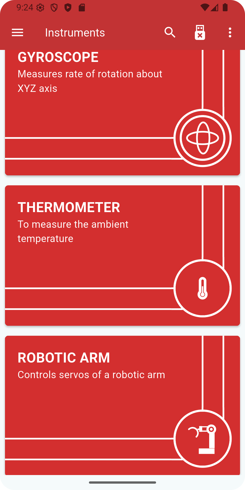
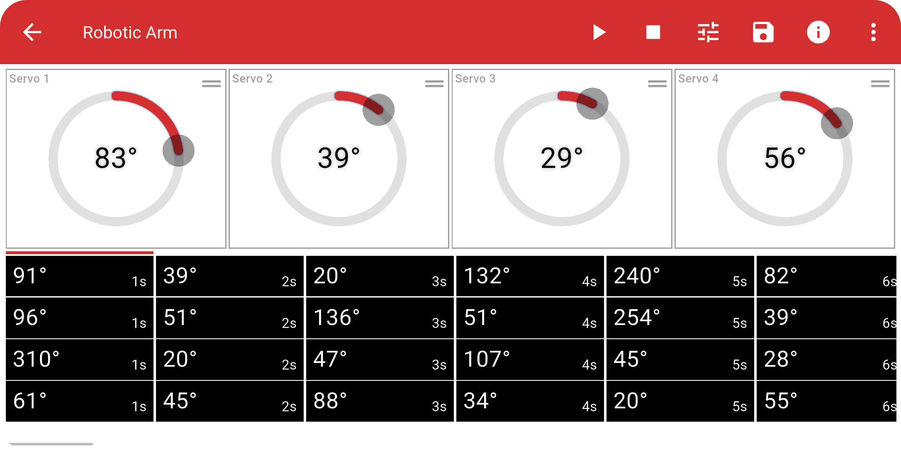
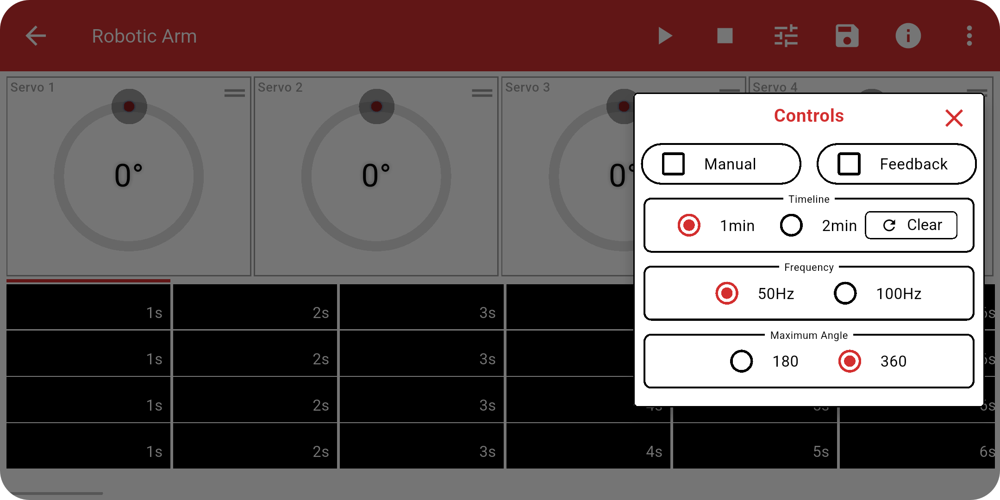

Robotic Arm¶
What is a Robotic Arm?¶
A Robotic arm is a mechanical structure that mimics the movements of a human arm. It typically consists of multiple joints controlled by actuators, most commonly servo motors, to achieve precise angular movement.
In the PSLab context, a robotic arm uses servo motors to perform tasks like conducting scientific experiments, lifting, rotating, or grasping. These servos are controlled via PWM (Pulse Width Modulation) signals.
The PSLab device provides four square wave PWM outputs SQR1, SQR2, SQR3, and SQR4 which allow control of up to four servo motors, enabling robotic arms with up to four degrees of freedom (DoF).
How to use it¶
Requirements¶
PSLab device
Robotic arm kit
Jumper wires
External power supply
Wiring Setup¶
Connect the signal wires (usually yellow) of the 4 servos to the PSLab device PWM outputs PINS:
SQR1,SQR2,SQR3, andSQR4.Connect the power wires (usually red) of all servos to the positive terminal of an external power supply.
Connect the ground wires (usually black) of all servos together to the GND of the external power supply.
Finally, connect the GND of the external power supply to the GND pin of the PSLab device to complete the common ground.
⚠️ Important: Do not power the servos directly from the PSLab device. Use an external regulated supply capable of handling the current requirements of all servos.
Performing the Experiment¶
Open the PSLab app on your Phone. 
Navigate to Robotic Arm.
Use the interface to:
Manually move each servo using sliders.
Create a timeline of servo movements.
Play, pause, or reset the timeline.
Change Frequency.
Save or import movements using CSV files.
|  |  |
Timeline CSV Import/Export¶
The PSLab app supports importing servo movement timelines from a CSV file, allowing interoperability with the PSLab Python library.
Exporting Timeline using Python¶
You can generate servo movement timelines using the pslab-python library and export them in CSV format for use in the PSLab app.
Here’s a minimal working example:
from pslab import ScienceLab
from pslab.external.motor import Servo, RoboticArm
psl = ScienceLab()
# Initialize servos on PWM outputs PINS
base = Servo("SQ1", pwm_generator=psl.pwm_generator)
shoulder = Servo("SQ2", pwm_generator=psl.pwm_generator)
elbow = Servo("SQ3", pwm_generator=psl.pwm_generator)
grip = Servo("SQ4", pwm_generator=psl.pwm_generator)
# Create Robotic Arm instance
arm = RoboticArm([base, shoulder, elbow, grip])
# Define timeline: each row = [S1, S2, S3, S4] angles at 1s interval
# Use None to keep a servo at the same angle as the previous step
timeline = [
[None, 30, 45, 10],
[90, 30, 45, None],
[180, 30, 45, None],
[45, 60, 60, 20],
[None, 60, 60, 20],
[0, 90, 90, 30],
[90, 90, 90, 30],
[180, 90, 90, 30],
[90, 45, 45, 0],
[0, 30, 30, None],
]
# Run the timeline on the robotic arm
# This will move each servo to the specified positions sequentially at 1-second intervals
arm.run_schedule(timeline=timeline)
# Export timeline to CSV for using in PSLab App
arm.export_timeline_to_csv(
timeline=timeline,
folderpath=r"C:\path\to\folder"
)
# Import timeline from a CSV file
timeline = arm.import_timeline_from_csv(filepath=r"\path\to\folder\filename.csv")
Observations¶
Each servo rotates to the specified angle.
Timeline playback, with position updates every 1 second, allows synchronized movement across all joints.
Applications¶
Pick-and-place mechanisms
Educational demos in robotics and automation